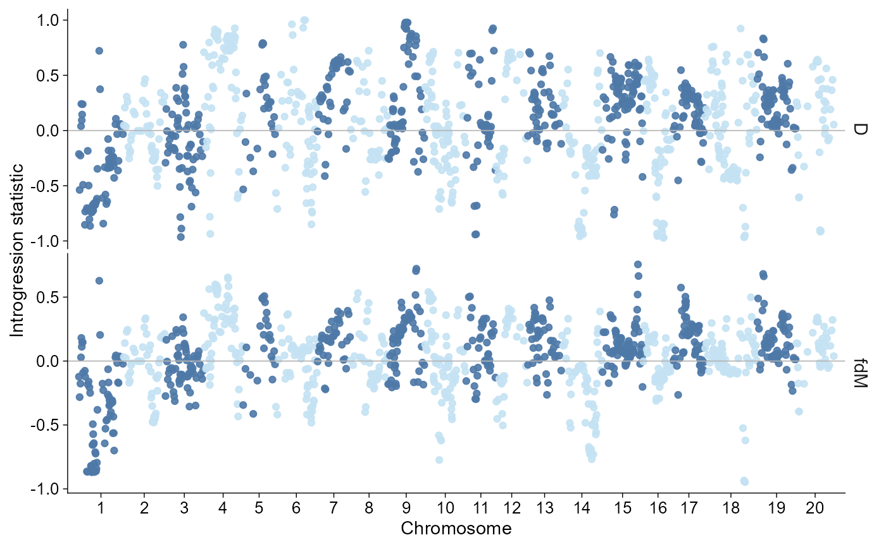
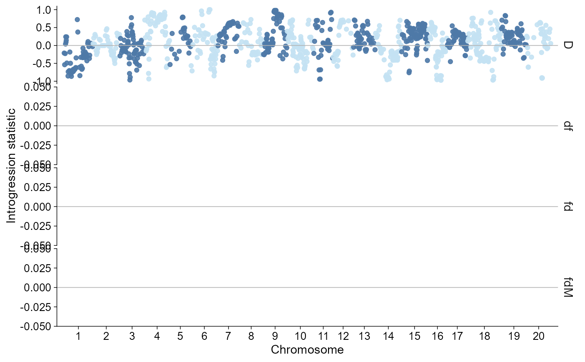

Introgression plots
geom_introgression.RdPlot introgression summaries from Dsuite localFstats/Dinvestigate windows, Dsuite BBAA/Dmin trio tables, ADMIXTOOLS qpdstat/f3/f4ratio tables, TreeMix lightweight graph summaries, and legacy genomics_general or qpGraph inputs. Windowed statistics use chromosome-wise Manhattan-like points or regional point-and-line traces, Dsuite trio summaries default to a raster-style P2 x P3 matrix with significant cells outlined, ADMIXTOOLS statistic tables use a horizontal forest/lollipop display with standard-error bars when se is present, mixed D/f3/f4-ratio summaries are split by statistic family, fixed-difference trio summaries use a boxplot-style display, and graph inputs use a compact edge diagram that emphasizes population tips and migration arrows. TreeMix edge graphs preserve drift coordinates when companion vertex output is present; covariance residual heatmaps and model-comparison diagnostics are intentionally outside this generic layer.
Usage
geom_introgression(
mapping = NULL,
data = NULL,
...,
stat = "all",
analysis = c("auto", "window", "trio", "graph"),
chr = NULL,
start = NULL,
end = NULL,
style = c("auto", "window", "manhattan", "region", "matrix", "raster", "trio", "graph"),
colour_by = c("stat", "chr"),
point_size = NULL,
point_alpha = 0.9,
base_size = 11,
base_family = "",
palette = "publication",
na.rm = FALSE,
show.legend = NA,
inherit.aes = TRUE
)
plot_introgression(
data,
stat = "all",
analysis = c("auto", "window", "trio", "graph"),
chr = NULL,
start = NULL,
end = NULL,
style = c("auto", "window", "manhattan", "region", "matrix", "raster", "trio", "graph"),
title = NULL,
subtitle = NULL,
caption = NULL,
base_size = 11,
base_family = "",
palette = "publication",
point_size = NULL,
point_alpha = 0.9,
...
)Arguments
- mapping
Optional aesthetic mapping. Defaults are chosen from the resolved plot style.
- data
A
ggpop_introgressionobject fromimport_introgression().- ...
Additional geom parameters.
- stat
Introgression statistic names to plot, e.g.
c("D", "fdM")or"all".- analysis
Optional analysis class filter:
"window","trio", or"graph".- chr
Optional chromosome vector for windowed results.
- start, end
Optional genomic region boundaries in base pairs for windowed results.
- style
Plot layout.
"auto"uses chromosome-wise Manhattan-like points for genome-wide window statistics, a point-and-line regional axis for local window calls, a raster-style P2 x P3 matrix for Dsuite BBAA/Dmin trio summaries, a horizontal forest/lollipop summary for ADMIXTOOLS statistic tables with standard-error bars whenseis present, a boxplot-style trio summary for fixed-difference rows, and an edge diagram for lightweight graph data."manhattan"is accepted as a compatibility alias for"window"and"raster"is an alias for the matrix view; usestyle = "trio"explicitly to draw Dsuite trio tables as ordered forest/lollipop summaries. Matrix views draw a complete background grid, observed D-statistic tiles, direct labels for small matrices, and outlines for significant cells when P values are present. Repeated P2/P3 combinations keep the row with the largest absolute D value while preserving its sign. Trio and matrix axes clean underscores in population labels for display only; mixed trio statistic families are faceted bystat; graph views label population tips and suppress internal node identifiers. TreeMix*.edges.gzimports use matching*.vertices.gzcoordinates when available, so the graph view can show the drift-parameter axis rather than a generic network layout.- colour_by
Colour window plots by statistic or chromosome.
- point_size, point_alpha
Layer appearance. Genome-wide window plots use this value as point size; region plots use it as point size and draw a thinner connecting line.
- base_size, base_family
Base theme font controls.
- palette
ggpop discrete palette.
- na.rm, show.legend, inherit.aes
Standard ggplot2 layer arguments.
- title, subtitle, caption
Optional plot labels. No default title is added.
Value
geom_introgression() returns a list of ggplot layers. plot_introgression() returns a ggplot object.
Examples
intro_file <- system.file(
"extdata", "introgression", "Dsuite",
"PopB_PopC_PopA_localFstats_run1_100_50.txt",
package = "ggPopi"
)
intro <- import_introgression(intro_file, type = "dsuite_dinvestigate")
intro |> plot_introgression(stat = c("D", "fdM"))

intro |> plot_introgression(stat = "D", chr = "1")
intro |> ggpop() + geom_introgression(stat = "D")
